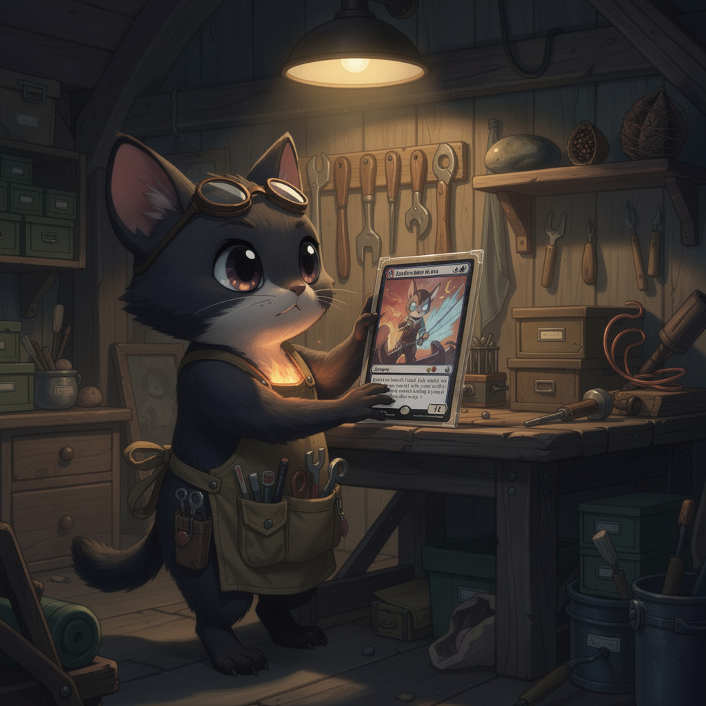
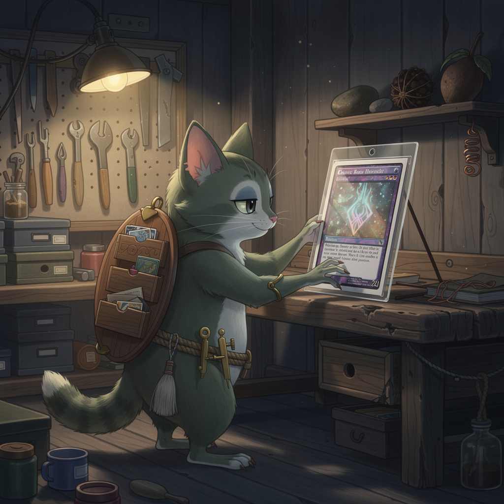

A · the moss-and-stone artisanRiver-stone skin, moss at the shoulders and knuckles, apron and tool belt. The patina law walking around.

B · the keeperDark fur, great ears, and a banked ember at the chest — the light you first saw it by, still burning. Goggles pushed up, pockets full of tools.

C · the archivistCarries its library: a hinged wooden cabinet on its back, card slots and shallow drawers. Calipers and a brush at the belt.
Every one is shown beside a single sleeved card nearly as tall as it is — the scale, and the reverence, in one image.